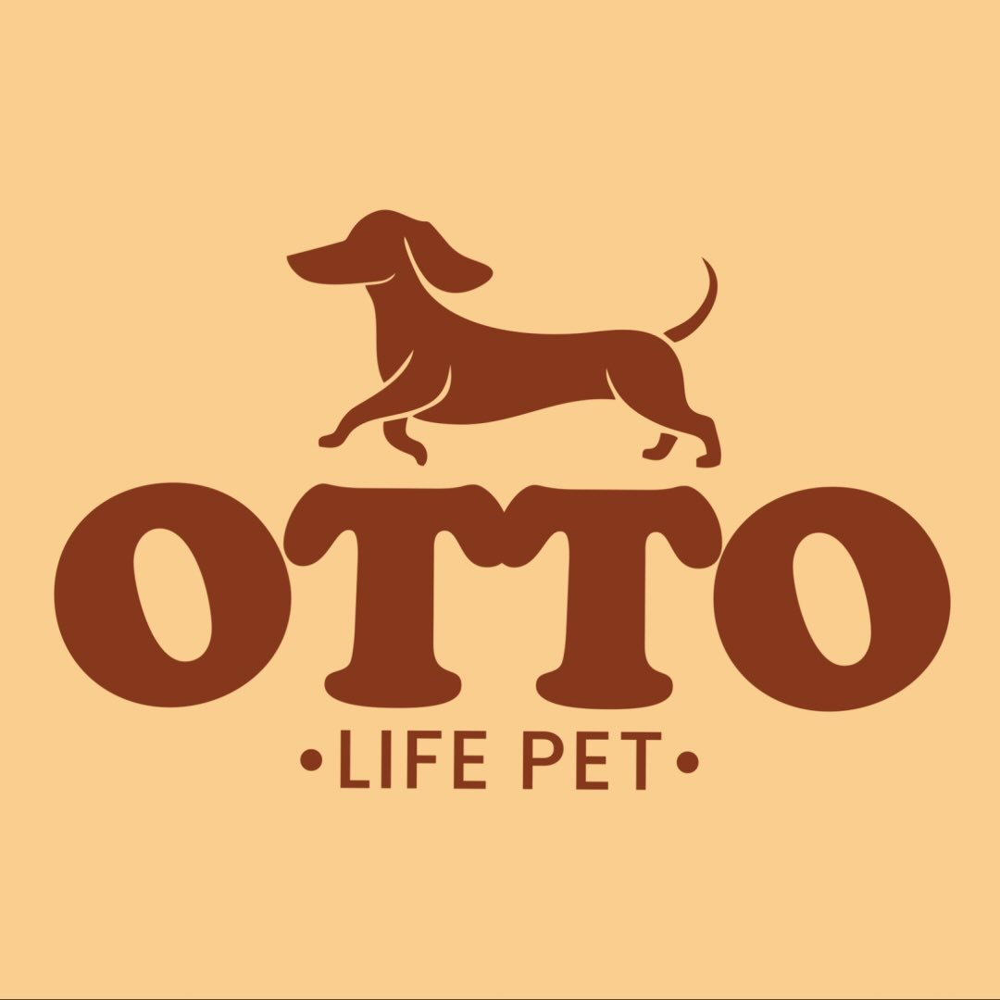

<!doctype html>
<html lang="pt-BR">
<head>
<meta charset="utf-8">
<meta name="viewport" content="width=device-width, initial-scale=1">
<title>Mapa · Otto Life Pet</title>
<link rel="stylesheet" href="https://unpkg.com/leaflet@1.9.4/dist/leaflet.css" integrity="sha384-sHL9NAb7lN7rfvG5lfHpm643Xkcjzp4jFvuavGOndn6pjVqS6ny56CAt3nsEVT4H" crossorigin="anonymous">
<script src="https://unpkg.com/leaflet@1.9.4/dist/leaflet.js" integrity="sha384-cxOPjt7s7Iz04uaHJceBmS+qpjv2JkIHNVcuOrM+YHwZOmJGBXI00mdUXEq65HTH" crossorigin="anonymous"></script>
<style>
html,body{margin:0;height:100%;background:#F8E6D0}
#map{position:absolute;inset:0;background:#F8E6D0}
.leaflet-tile-pane{filter:sepia(.3) saturate(.85)}
.otto-pin img{display:block;width:56px;height:56px;box-sizing:border-box;border-radius:50%;border:3px solid #FFFFFF;object-fit:cover;box-shadow:0 8px 20px rgba(62,29,20,.3)}
.otto-pin::after{content:"";position:absolute;left:50%;top:54px;transform:translateX(-50%);border:8px solid transparent;border-top-color:#FFFFFF;border-bottom:0}
.leaflet-popup-content-wrapper,.leaflet-popup-tip{background:#F8E6D0;color:#3E1D14;box-shadow:0 12px 32px rgba(62,29,20,.18)}
.leaflet-popup-content-wrapper{border-radius:14px}
.leaflet-popup-content{margin:14px 18px;font:14px/1.45 "DM Sans",Arial,sans-serif}
.leaflet-popup-content strong{display:block;margin-bottom:4px;font:400 20px/1.1 "DM Serif Display",Georgia,serif}
.leaflet-popup-content a{color:#9F492F;font-weight:600}
.leaflet-container a.leaflet-popup-close-button{color:#4D311F}
.leaflet-bar a{color:#4D311F}
.leaflet-control-attribution{background:rgba(248,230,208,.9)!important;color:#4D311F}
.leaflet-control-attribution a{color:#6C472C}
</style>
</head>
<body>
<div id="map" role="region" aria-label="Mapa com a localização da Otto Life Pet"></div>
<script>
// Posição aproximada (nível de rua): R. Gen. Osório, 705 – Aviação, Venâncio Aires – RS
const pos = [-29.6051, -52.1990];
// No celular, um dedo rola a página; o mapa aproxima com pinça
const map = L.map('map', { scrollWheelZoom: false, dragging: !L.Browser.mobile }).setView(pos, 16);
L.tileLayer('https://tile.openstreetmap.org/{z}/{x}/{y}.png', { maxZoom: 19, attribution: '© OpenStreetMap contributors' }).addTo(map);
const icon = L.divIcon({ className: 'otto-pin', html: '', iconSize: [56, 64], iconAnchor: [28, 64], popupAnchor: [0, -60] });
const dest = 'https://www.google.com/maps/dir/?api=1&destination=' + encodeURIComponent('R. Gen. Osório, 705 - Aviação, Venâncio Aires - RS, 95800-000');
L.marker(pos, { icon, title: 'Otto Life Pet', alt: 'Otto Life Pet' }).addTo(map)
  .bindPopup('<strong>Otto Life Pet</strong>R. Gen. Osório, 705 – Aviação<br>Venâncio Aires – RS<br><a href="' + dest + '" target="_blank" rel="noopener">Como chegar ↗</a>');
</script>
</body>
</html>
